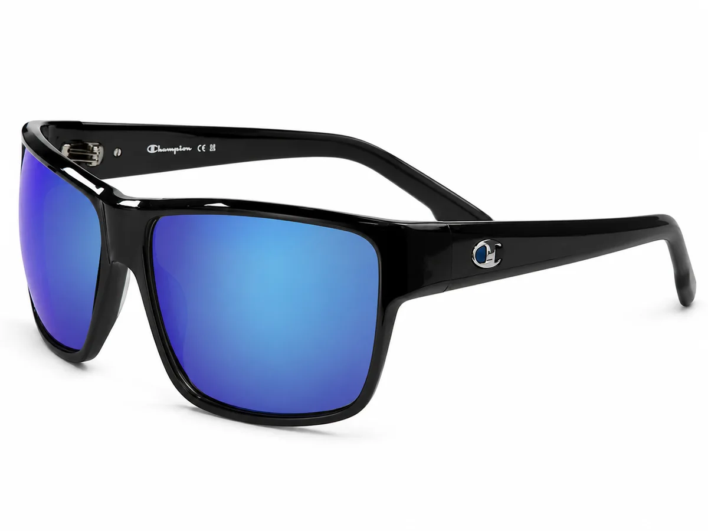
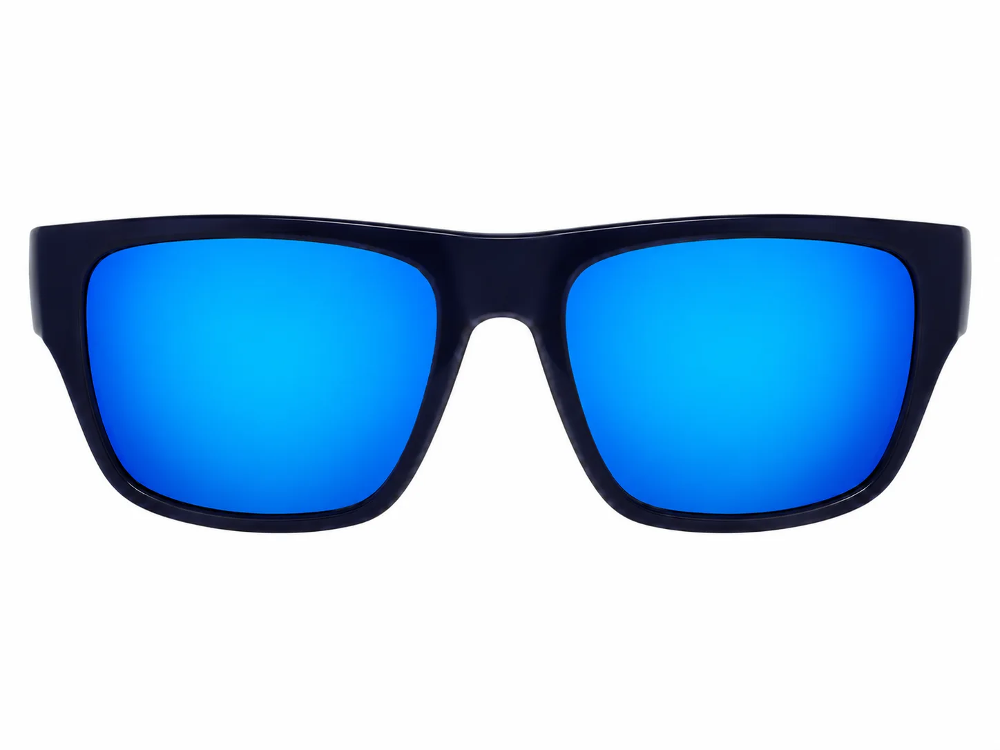
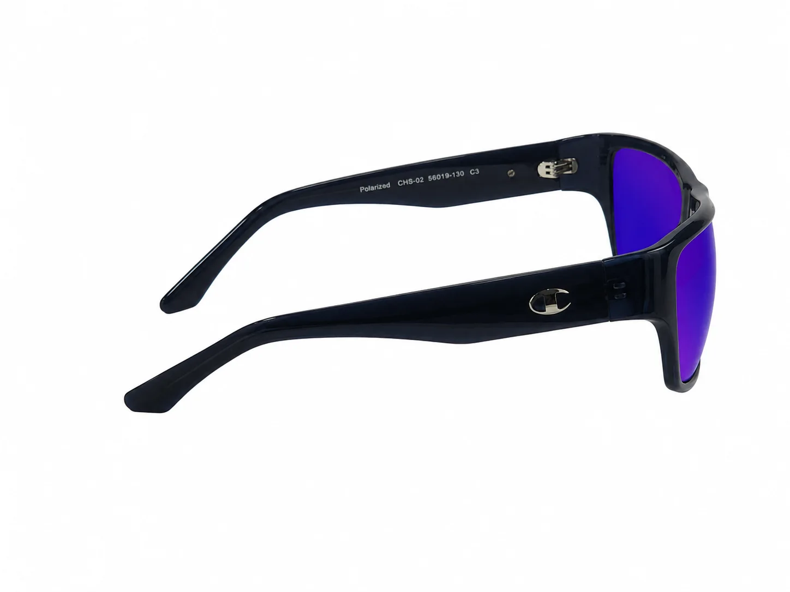

Cómo seleccionar lentes de sol para una óptica
Una compra equilibrada combina referencias fáciles de recomendar, siluetas deportivas y piezas de impacto. El objetivo no es llenar la vitrina: es cubrir usos distintos con una lógica que el equipo pueda explicar.

Una selección de solares funciona mejor cuando cada grupo responde a una necesidad comercial concreta. Para una óptica, eso significa dar al asesor opciones claras para empezar la conversación y suficientes contrastes para que el cliente compare.
1. Construye una base urbana
Empieza con formas rectangulares y proporciones familiares. Son referencias que se entienden rápido, combinan con estilos cotidianos y ayudan a presentar la colección Champion sin exigir una explicación extensa. El CHS-02 C3, por ejemplo, aporta un frente rectangular deportivo, acabado negro y lente azul espejado.
La base urbana debe ocupar una parte visible del surtido porque sirve como puente entre quien busca una solar de uso diario y quien quiere una identidad más activa.
2. Añade siluetas deportivas con propósito
Las pantallas y formas envolventes cambian el ritmo de la vitrina. Úsalas para representar una estética dinámica y una cobertura visual más amplia, sin atribuir prestaciones técnicas que no estén confirmadas en la ficha del producto.
Cuando la categoría UV, la medida u otra especificación figure como pendiente de confirmación, el asesor debe verificarla con Innova antes de presentarla como un dato cerrado.

3. Reserva espacio para piezas de impacto
Una pieza blanca, una lente espejada intensa o una pantalla de mayor presencia puede detener la mirada y abrir la conversación. No tiene que dominar la compra: su función es atraer, mostrar amplitud de colección y llevar al cliente hacia otras referencias.

4. Evita comprar variantes que cuentan la misma historia
Antes de repetir colores cercanos, comprueba si la selección ya cubre ese uso y esa silueta. Una mezcla más útil combina una rectangular urbana, una opción metálica, una deportiva envolvente y una referencia de alto contraste. Después puedes ampliar las variantes según la respuesta de tu mercado.
Revisa el CHS-02 C3 en el catálogo
Consulta las imágenes disponibles y prepara tu selección profesional desde la ficha real del producto.